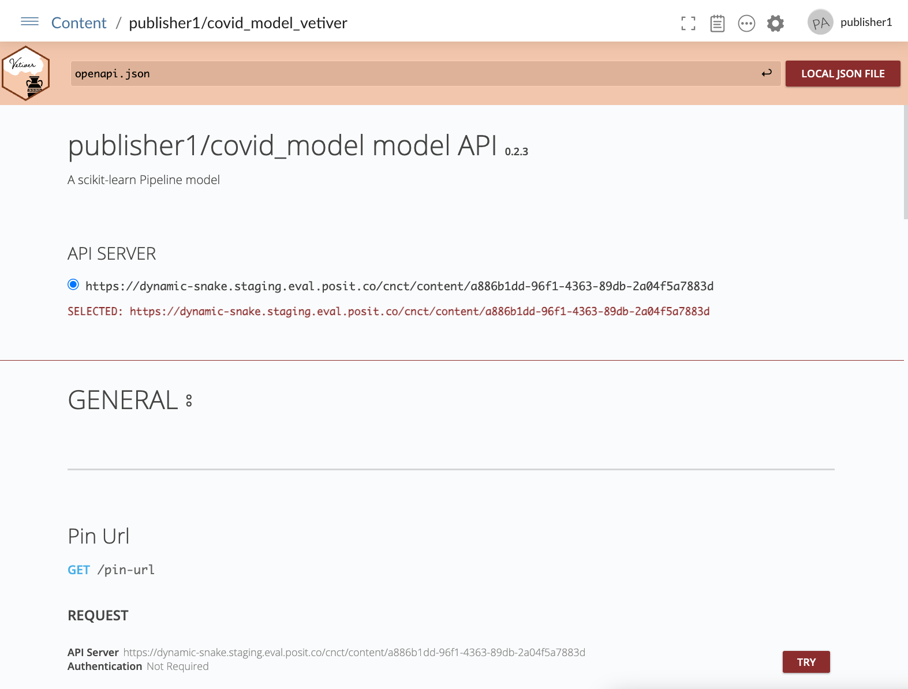
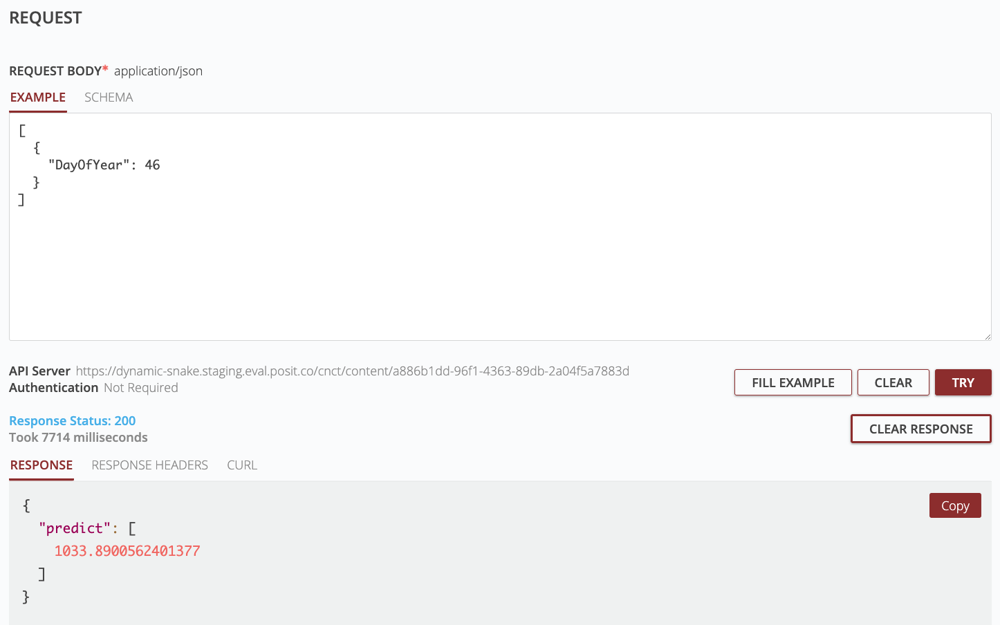

flowchart LR A(Convert model to\nvetiver model) --> B(Pin vetiver model\nto Posit Connect) B --> C(Serve vetiver model\nas an API) C --> D(Make a prediction!)
6 Modeling with Posit Team
Many data science workflows culminate in a deliverable. This could be a single plot or table, a detailed dashboard, or a interactive web application. Deliverables must tell a story, and the only way to tell a good story is to understand the underlying data.
Machine Learning (ML) is an exciting and ever-evolving facet of data science, offering a valuable means to extract insights from your dataset that may not be readily apparent through basic plots and tables. While generating models can pose certain challenges, the greater challenge often lies in determining the methods to save, distribute, and serve your model so that others can interact with it. In this chapter, we’ll discuss how Posit Team can be used to support the entire ML life cycle, from creation to delivery!
6.1 The Machine Learning Life Cycle

As seen in Figure fig-ml-lifecycle, all models start with data (very top of the cycle). The next step is to prepare the data for modeling, which requires cleaning and transforming to ensure the data is in a format that is usable for machine learning. Which tool(s) you use to create an ML model is completely up to you, but here’s a short list of common R/Python tools:
| R | Python |
|---|---|
tidymodels |
SciKit-Learn |
caret |
Keras |
| PyTorch | |
| TensorFlow |
Rarely is the creation of a model a one time event. As data changes and the ML tools evolve, models will need to be updated and subsequently deployed into production. It’s also important that the deployed model demonstrates high performance compared to prior versions and other models.
6.2 MLOps with vetiver
Given the iterative nature of the ML life cycle, there exists tools explicitly designed to assist with the deployment and maintenance (i.e. “operations”) of ML models. This practice is known as Machine Learning Operations, or MLOps. Posit has created a MLOps framework for both R and Python known as vetiver. vetiver was designed to fill the tool gap in the ML life cycle around versioning, deploying, and monitoring model performance.
6.2.1 vetiver workflow with Posit Team
A typical vetiver workflow within Posit Team, depicted in the flow diagram above, consists of converting a model to a vetiver model, saving it to Posit Connect as a pin, and then serving it as an API. This workflow is shown below in both Python and R. Be sure to substitute “your_name” with your Posit Connect username:
import pins
from vetiver import VetiverModel
from vetiver.data import mtcars
from sklearn.linear_model import LinearRegression
# Create Model
model = LinearRegression().fit(mtcars.drop(columns="mpg"), mtcars["mpg"])
# Create Vetiver Model
v = VetiverModel(model, model_name = "your_name/cars_linear",
prototype_data = mtcars.drop(columns="mpg"))
# Save Model as pin
board = pins.board_connect(allow_pickle_read = True)
vetiver_pin_write(board, v)library(vetiver)
library(pins)
# Create Model
cars_lm <- lm(mpg ~ ., data = mtcars)
# Create Vetiver Model
v <- vetiver_model(cars_lm, "your_name/cars_linear")
# Save Model as pin
board <- board_connect()
vetiver_pin_write(board, v)Now that we have a model saved to Posit Connect, we can use vetiver to serve it as an API. By default, vetiver will use FastAPI for python models, and plumber for R models. Creating APIs is a cinch with vetiver:
from vetiver import deploy_rsconnect
from rsconnect.api import RSConnectServer
import os
# Define Connect Server
connect_server = RSConnectServer(
url=os.getenv("CONNECT_SERVER"),
api_key=os.getenv("CONNECT_API_KEY")
)
# Convert pinned model on Connect to API
deploy_rsconnect(board = board,
pin_name = "you_name/cars_linear",
connect_server = connect_server)library(plumber)
library(rsconnect)
# Convert pinned model on Connect to API
vetiver_deploy_rsconnect(board = board,
name = "your_name/cars_linear")In some cases, you may need to add some additional arguments to these functions (e.g., Posit Connect server URL and API key). Additional details can be found on the Posit Connect user guide.
6.2.2 Interacting with APIs on Posit Connect
Human interactions with an API usually requires a visualization layer. When creating an API for your model with vetiver, the default visual documentation for Plumber is swagger, and for FastAPI it’s RapiDoc. Below is an example of the RapiDoc documentatin of a FastAPI hosted on Posit Connect:

This example API uses a model to predict the number of COVID cases given a specific day of the year. You will create a similar API in the next exercise! The prediction is generated by sending a POST request to the API with specific parameters. In this case, there is only one parameter, the day of the year (DayOfYear). RapiDoc allows you to try out the API. In the image below, we asked the API to return the prediction of the number of COVID cases on day 46 of the year. At the bottom, you can see the response of approximately 1,033 cases:

You can also interact with APIs programmatically. In the code below, we’ll show you how to query an API using vetiver hosted on Posit Connect using both R and Python. Full instructions (including additional authentication options) can be found here.
from vetiver.server import predict, vetiver_endpoint
# Define the API endpoint
endpoint = vetiver_endpoint(
f"https://connect.example.com/content/{APP_ID}/predict"
)
# If API has restricted access, you'll need to supply an API Key
api_key=os.getenv("CONNECT_API_KEY")
# Predict using new data!
h = {"Authorization": f"Key {api_key}"}
response = predict(endpoint=endpoint, data=new_data, headers=h)# Define the API endpoint
endpoint <- vetiver_endpoint(
"https://connect.example.com/content/$APP_ID/predict")
# If API has restricted access, you'll need to supply an API Key
apiKey <- Sys.getenv("CONNECT_API_KEY")
# Predict using new data!
predict(
endpoint,
new_data,
httr::add_headers(Authorization = paste("Key", apiKey)))